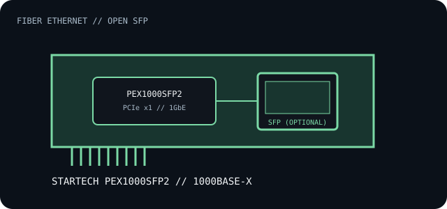

[ INDIVIDUAL COMPONENT // EXPANSION CARDS ]
StarTech PEX1000SFP2
Single-port Gigabit Ethernet PCI Express adapter with an open SFP slot for a separately selected compatible transceiver.

IDENTIFICATION: The PEX1000SFP2 is a single-port card. Its SFP module is separate; do not mistake the model suffix for two SFP cages. Check the card's PCI IDs and transceiver compatibility list before buying optics.
Specifications and compatibility
| Exact model / part | StarTech.com PEX1000SFP2 Gigabit Ethernet Fiber Network Card. |
|---|---|
| Controller | StarTech's product references do not identify one controller silicon revision for every production unit; inventory PCI vendor/device ID and installed driver rather than assuming a chipset. |
| Bus / host interface | PCI Express x1. |
| Ethernet standards / rates | 1000BASE-X optical Ethernet through a compatible Gigabit SFP module; IEEE 802.3z. Supported fiber mode/range depends on the installed SX/LX or other approved optic. |
| Ports / connectors | One open SFP cage; no transceiver is included in the card itself. A copper RJ-45 SFP is a separate module and has its own media/length limits. |
| OS / driver compatibility | StarTech provides model-specific driver/download resources for supported Windows, macOS and Linux versions. Verify the exact release and architecture; legacy OS support should not be inferred from the card's PCIe bus. |
| Revision / host caveat | Check card revision, SFP module coding, fiber type, wavelength, connector polish, host slot clearance and driver. The card does not make incompatible SFPs or fiber media interoperable. |
Installation and archival notes
- Install a qualified 1Gb SFP and matching fiber pair, or a specifically supported copper module; record its make and part number.
- Inspect connector type and fiber polarity; do not look into an energized fiber port.
- Confirm driver availability and electrical PCIe x1 support in the host platform.
Manufacturer and manual sources
- StarTech.com — PEX1000SFP2 product informationProduct identity, PCIe interface and supported Gigabit SFP media.
- StarTech PEX1000SFP2 user manualInstallation and adapter configuration manual; confirm publication against the board revision.
- StarTech.com — drivers and downloadsSearch by PEX1000SFP2 for OS-specific driver packages.